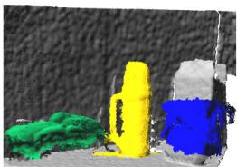
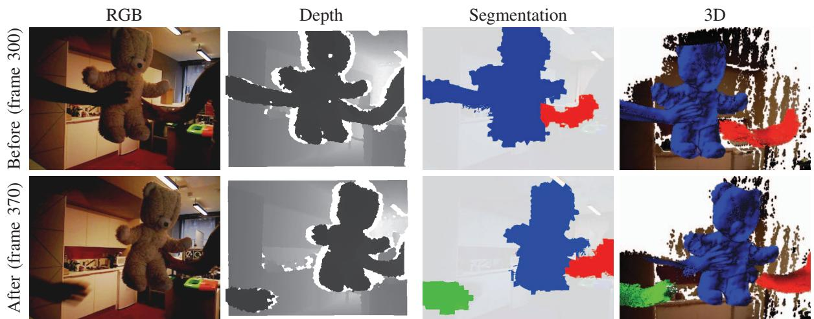
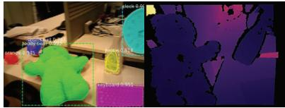
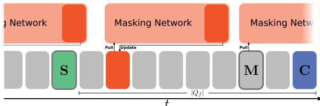

本节目标
读完你应能：① 区分「逐像素语义」与「实例级」这两个粒度；② 讲清 Co-Fusion 怎么用「多份独立 surfel + 运动+语义双线索」拆场景；③ 说明它的关联判据（离群像素 >3% 或 新语义 ID）；④ 理解 MaskFusion 如何用 Mask R-CNN 把实例级做得更稳，以及这套「每物体一个模型」路线仍有的代价。
和前面课程怎么接
0159 的 SemanticFusion 停在「逐像素语义」——只给类别、不区分实例。本课正是补上「第几个」这一级，是语义粒度三档（像素→实例→全景）里的第二档。0158 提到动态检测靠「整类剔人」，而本课 MaskFusion 反过来——检测到人可以把人整个忽略掉（fr3 walking halfsphere），和 0158 的「可动先验」是同一思路的两面。0147 的 SAM 是现代实例分割零件，本课用的 SharpMask / Mask R-CNN 是它的早期前身。
1. 从「类别」到「第几个」
0159 的 SemanticFusion 给每个点贴了「椅子 / 墙」这类标签。但生活里这还不够：你让机器人「把那个杯子拿给我」，它面对桌上两个杯子，若只认得「这是杯子」，就分不清该拿哪一个。这就是语义粒度的升级——从「类别（class）」到「实例（instance）」。
Co-Fusion（2017）和 MaskFusion（2018）是同一作者（Rünz & Agapito，UCL）的连续两作：Co-Fusion 第一次把场景拆成「背景 + 多个独立物体」各自建模、各自追踪；MaskFusion 再把实例分割网络（Mask R-CNN）接进来，让「第几个」的判断更可靠。它们都仍站在 ElasticFusion 的 surfel 肩膀上——只是从一个大地图，变成了「一堆小地图」。
2. 语义 vs 实例：一张对照图
怎么看这张图：① 区别只在「是否给同类物体分配不同 ID」；② 实例级让「拿第几个」成为可能；③ 这正是 Co-Fusion / MaskFusion 相对 0159 的核心进步。
要记住的一句话：语义告诉你「是什么」，实例告诉你「是哪一个」——后者才能支撑「物体级」交互。
3. Co-Fusion：多模型 surfel 与双线索分割
Co-Fusion 的做法很直接：不再维护「一张大 surfel 地图」，而是给背景一份模型、每个物体各一份独立 surfel 模型，总共至多 N 个（原文最多 5 个）。这样每个物体都能独立追踪位姿、独立重建。
怎么决定「哪些 surfel 属于同一个物体」？它用了两条线索一起判：① 运动线索——用几何运动分割（SLIC 超像素 + 全连接 CRF，unary 是 ICP 残差），看哪些点「动得一致」；② 语义线索——用 SharpMask 实例分割（COCO 预训练）给的实例标签。两条都对得上，才归为一个模型。

怎么看这张图：三件物体被依次放到桌上，分别被标成蓝（小盒）、黄（烧瓶）、绿（泰迪熊），且各自被分割、追踪、重建。它直观展示了 Co-Fusion「每个物体一份独立模型」的核心设计——这正是相对 0159「单一大地图」的最大结构变化。

怎么看这张图：这是「双线索分割」威力的最佳例证：起初左手和泰迪一起动，被归为同一模型；交接发生时，运动线索变了，系统把它们拆成两个独立模型继续追踪。它说明 Co-Fusion 的关联是「几何+语义联合判定」，不是死记硬背。
4. 关联判据：什么时候算「新物体」
「第几个」的稳定性，取决于「这一帧的点到底属于已有物体，还是新物体」这个判断。Co-Fusion 的判据很朴素：先做几何运动分割，若某区域里离群像素（outlier）占比超过 3%，就认为出现了现有模型解释不了的东西，开一个新模型；同时用语义实例 ID 辅助——SharpMask 给了不同 ID，就更容易判定「这是另一个物体」。
注意它不做跨帧的匈牙利匹配 / IoU 匹配，而是靠「几何残差 + 语义 ID」当场联合判定。好处是简单、实时；代价是容错较弱——一旦分割抖动，就可能把同一个物体误判成两个，或把两个并成一个。
互动判断
Co-Fusion 判断「出现一个新物体、要开新模型」的主要几何判据是什么？
怎么看这张图：① 先看左右两帧里杯子的位置变了，但都还在桌面上；② 中间圆圈写的是判据——IoU 到了阈值（MID-Fusion 用 0.5）就判为同一个物体，低于阈值就新建一个；③ 注意底部两行小字：这条判据简单有效，但它有个致命弱点——物体被挡住再出现时，两帧掩码毫无重叠，于是会被当成新物体。
要记住的一句话：从「语义」走到「实例」，多出来的不是分割精度，而是这个「同一性判断」——它判错一次，地图里就会多出一个重复的物体。
5. MaskFusion：把实例分割网络接进来
MaskFusion（2018）是 Co-Fusion 的实例级升级。它把 Mask R-CNN 实例分割接到 SLAM 后端：每一帧先得到每个「thing（具体物体）」的掩码和 ID，再结合几何线索，把每个物体建为独立模型。背景单独一份，前景每个物体单独一份。
关键收益有两点：一是实例 ID 更稳，不容易把同一个物体拆成两个；二是它能检测并忽略「人」——在 fr3 walking halfsphere 这类动态场景里，把走动的人整块排除，只重建静止部分。这正好和 0158 讲的「动态检测靠整类剔人」是同一思路，只是 MaskFusion 把它做进了语义建图本身。

怎么看这张图：背景（白）、键盘（橙）、钟（黄）、球（蓝）、泰迪（绿）、喷瓶（棕）分别被独立识别、追踪、建图。注意即便相机在动、物体也在动，每个实例仍保持自己的 ID 与模型——这就是「实例级建图」的样子。

怎么看这张图：这张总览把「SLAM 后端」和「masking 网络」并列，并画出两者怎么交互：分割网络产出掩码，SLAM 后端据此把不同物体分给不同模型。它是理解 MaskFusion 数据流最该看的一张图。
6. 关联判错：双杯问题
「每物体一个模型」听着干净，但关联一旦出错，地图上就会出现怪现象。最典型的是双杯问题：同一个杯子，本帧被误判成「新物体」，系统就又开了一份模型——于是地图里凭空出现「两个杯子」，其实只有一个。
怎么看这张图：① 这是「每物体一个模型」路线最易踩的坑——关联是脆弱的；② 后面 MID-Fusion / PanopticFusion 改用 IoU / 地图参考来稳关联，正是为了治这个病；③ 诚实标注：Co-Fusion / MaskFusion 的关联并非百分百可靠。
要记住的一句话：实例级建图好不好，七分看「关联稳不稳」，双杯问题就是关联失败的代价。
7. 实时性与局限
双篇的实时性账很清楚：Co-Fusion 的非语义版（纯几何运动分割）约 12 FPS，实时；但一旦换成 SharpMask 语义实例版，就不实时了——实例分割网络太重。MaskFusion 用 Mask R-CNN 同样面临这个问题，它靠「几何实时、分割降频」维持可用。它们都仍用 surfel，所以也继承了 0159 说的短板：没有自由空间、不存物体内部，做不到导航级抽象。
另外作者自陈两个局限：语义实例版达不到实时；超像素运动分割会过分割（把一个物体切成几块）。这些都为后面的体素 / 图路线（0161–0163）留出了改进空间。
互动判断
关于 Co-Fusion / MaskFusion 与 SemanticFusion（0159）的地图表示，下面哪句对？
读完你应该能回答
- 「逐像素语义」和「实例级」差在哪？为什么后者才能支撑「拿第几个杯子」？
- Co-Fusion 怎么把场景拆开？它的「双线索分割」是哪两条线索？
- Co-Fusion 判定「出现新物体」的几何判据是什么？它做不做跨帧 IoU / 匈牙利匹配？
- MaskFusion 相对 Co-Fusion 升级了什么？它为什么能「忽略走动的人」？
- 双杯问题是怎么产生的？这套「每物体一个模型」路线继承了 0159 的哪些短板？